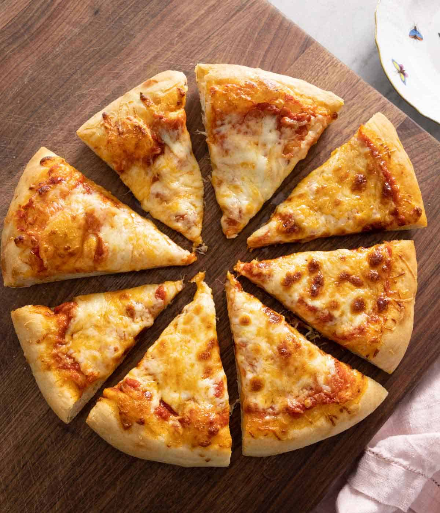

Odin Pizza
Back to Home

Description
Pizza is a dish of Italian origin consisting of a usually round, flat base of leavened wheat-based dough topped with tomatoes, cheese, and often various other ingredients (such as anchovies, mushrooms, olives, vegetables, meat, etc.), baked at a high temperature, traditionally in a wood-fired oven.
Steps
- 1 pizza dough
- 1 cup pizza sauce
- 2 cups shredded mozzarella cheese
- 1/2 cup pepperoni slices
- 1/4 cup grated Parmesan cheese
- 1 tablespoon olive oil
- 1 teaspoon dried oregano
- 1 teaspoon garlic powder
- 1/2 teaspoon salt
- 1/4 teaspoon black pepper
- Fresh basil leaves (for garnish)
Instructions
- Preheat your oven to 475°F (245°C).
- Roll out the pizza dough on a floured surface to your desired thickness.
- Transfer the rolled-out dough to a pizza stone or baking sheet.
- Spread the pizza sauce evenly over the dough, leaving a small border around the edges.
- Sprinkle the shredded mozzarella cheese over the sauce.
- Add pepperoni slices and any other toppings you desire.
- Drizzle olive oil over the top and sprinkle with oregano, garlic powder, salt, and black pepper.
- Bake in the preheated oven for 12-15 minutes or until the crust is golden brown and the cheese is bubbly.
- Remove from the oven and let it cool for a few minutes before slicing.
- Garnish with fresh basil leaves if desired.
- Serve hot and enjoy your homemade pizza!